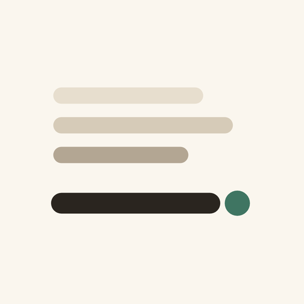

Jedna linijka dziennie. Codziennie, przez lata. A potem – ten sam dzień sprzed roku, dwóch i pięciu lat.
Jedno zdanie, do 200 znaków. Zapisuje się samo. Bez serii, bez wyrzutów – pominięty dzień zawsze możesz dopisać.
Pod dzisiejszą linijką czekają te same dni z poprzednich lat. Z czasem to najpiękniejsza część aplikacji.
Osobny dziennik o dziecku z jego wiekiem przy każdym wpisie: „1 rok 5 miesięcy”, „2 lata 3 miesiące”.
Kropki dni z wpisem, widok nastroju, rok na jednym ekranie i podsumowanie roku.
Szybkie wyszukiwanie po słowach, tagach i ludziach – także bez polskich znaków.
Bez konta i bez serwera. Wszystko zostaje na telefonie, z blokadą Face ID i pełnym eksportem w każdej chwili.
Pisanie, cała historia, „Tego dnia”, wyszukiwanie, podsumowanie roku i eksport są i zostaną bezpłatne. Plus dodaje: do 10 dzienników, style papieru i kroje pisma, książkę roku w PDF, wglądy z wielu lat i kapsuły czasu – linijki do siebie z przyszłości. Subskrypcja roczna z 7 dniami za darmo albo zakup jednorazowy.
Wkrótce w App Store i Google Play.